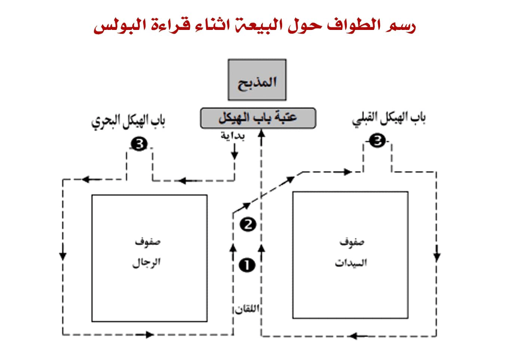
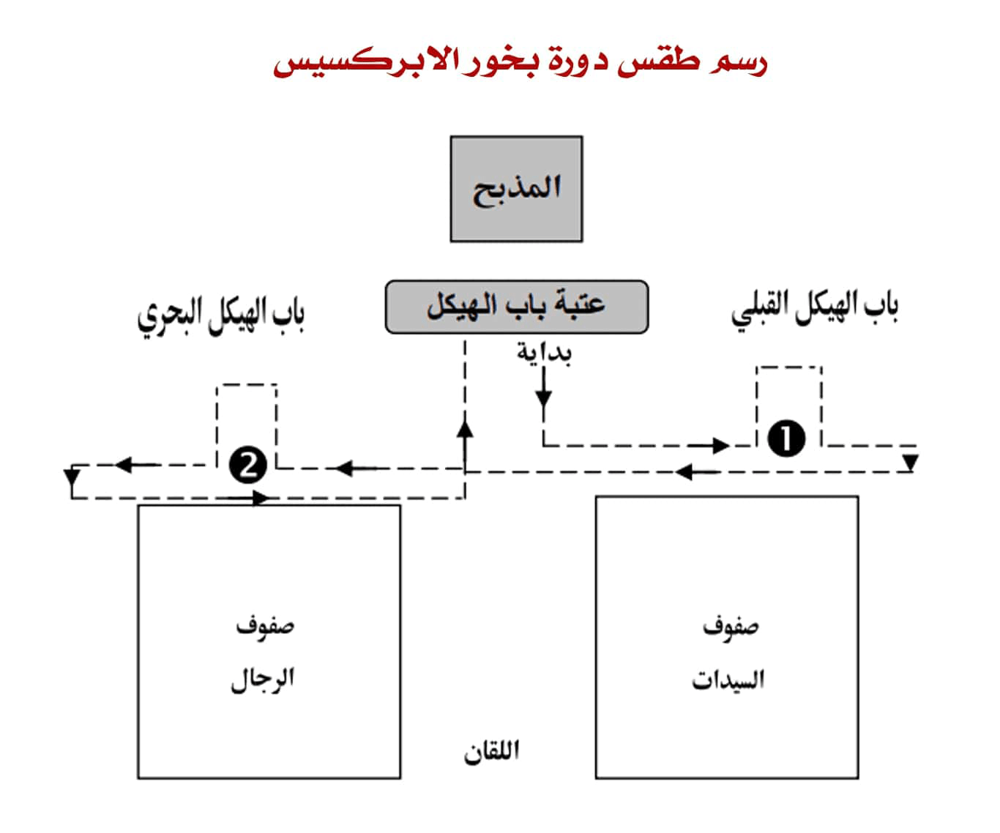

| سرى | قبطي | ق معرب | عربي |
| لحن العذراء مريم |
| الشعب فإنهم بعد تحليل الخدام يرتلون لحن العذراء |
| فى ايام الاعياد وكل ايام الافطار |
| يقول الشعب |
| طاى شوري إن نوب إن كاثاروس إيت فاى خابي آروما طا إتخين نين جيج إن آآرون بي أويب إفطالي أو إسطوى نوفي إى إبشوي إيجين بيما إن شؤوشي. | هذه المجمرة الذهب النقي الحاملة العنبر التي في يدي هرون الكاهن يرفع بخور على المذبح |
| وباقي أيام الأسبوع وفي الأصوام |
| يقول الشعب |
| تي شوري إن نوب تي تي بارثينوس بيس آروماتا بي بنسوتير. آسميسي إمموف آفسوتي إممون أووه أف كانين نوفي نان إيفول. | المجمرة الذهب هي العذراء وعنبرها هو مخلصنا ولدته وخلصنا وغفر لنا خطايانا |
| الهيتنيات (أرباع شفاعات القديسين) |
| ثم تقال هذه الأرباع لطلب شفاعات القديسين (الهيتينيات) |
| العذراء |
| هيتين ني إبريسفيا إنتي تي ثيؤطوطوس إثؤواب ماريا إبشويس آري إهموت نان إمبي كو إيفول إنتي نين نوفي. | بشفاعات والدة الإله القديســة مريم . يا رب أنعم لنا بمغفرة خطايانـا |
| الملاك ميخائيل |
| هيتين ني ابريسفيا انتي بي ارشي انجيلوس اثؤواب ميخائيل اب ارخون اننا ني فيؤوي: ابتشويس اري اهموت نان ابي كوايفول انتى نين نوفي | بشفاعات رئيس الملائكة الطاهر ميخائيل رئيس السمائيين. يارب انعم علينا بمغفرة خطايانا |
| الملاك غبريال |
| هيتين ني ابريسفيا انتى بي أرشي أنجيلوس اثؤواب غبرييل بي فاي شين نوفي ابتشويس، أري اهموت نان امبي كو ايفول انتي نين نوفي | بشفاعات رئيس الملائكة الطاهر غبريال المبشر يارب انعم علينا بمغفرة خطايانا |
| الملائكة |
| هيتين ني إبريسفيا إنتي بي شاشف إن أرشي آنجيلوس نيم ني طغما إن إيبورانيون .إبتشويس آري إهموت نان إمبي كو إيفول إنتي نين نوفي | بشفاعات السبعة رؤساء الملائكة والطغمات السمائيـــــــة .يا رب أنعم لنا بمغفرة خطايانـا |
| يوحنا المعمدان |
| هيتين ني إبريسفيا إنتي بي أبرودروموس أمفا بتيس تيس يوأنس بي ريفتي أومس .إبتشويس آري إهموت نان إمبي كو إيفول إنتي نين نوفي | بشفاعات : الصابغ السابق : يوحنا المعمدان : يــارب أنعم لنا بمغفرة خطايانـا |
| الرسل |
| هيتين ني إفكي إنتي ناشويس إنيوتي إن آبوسطولوس نيم إبسيبي إنتي ني ماثيتيس .إبتشويس آري إهموت نان إمبي كو إيفول إنتي نين نوفي | بصلوات سادتي الآباء الرسل وبقية الـتلاميذ .يا رب أنعم لنا بمغفرة خطايانـا |
| مارمرقس |
| هيتين ني إفكي إنتي بي ثيئوريموس إن أف آنجيليستيس افا ماركوس بي آبوسطولوس .إبتشويس آري إهموت نان إمبي كو إيفول إنتي نين نوفي | بصلوات ناظر الإلـــه الإنجيلي مرقس الرســــــــــول يا رب أنعم لنا بمغفرة خطايانـا |
| القديس استيفانوس |
| هيتين ني إفكي إنتي بي آرشي ذياكون إتسماروؤت إستيفانوس بي شورب إممارتيروس .إبتشويس آري إهموت نان إمبي كو إيفول إنتي نين نوفي | بصلوات رئيس الشمامسة المبارك اسطفانوس أول الشهداء. .يا رب أنعم لنا بمغفرة خطايانـا |
| مارجرجس |
| هيتين ني إفكي إنتي بي آثلوفوروس إم مارتيروس باتشويس إبؤرو جيئورجيوس .إبتشويس آري إهموت نان إمبي كو إيفول إنتي نين نوفي. | بصلوات المجاهد الشهيد سيــدي الملك جيؤرجيــــــــوس . يا رب أنعم لنا بمغفرة خطايانـا |
| ابي سيفين |
| هيتين ني إفكي إنتي بي آثلوفوروس إم مارتيروس فيلوباتير مرقوريوس .إبتشويس آري إهموت نان إمبي كو إيفول إنتي نين نوفي | بصلوات المجاهد الشهيد مرقوريوس محب الآب. يا رب أنعم لنا بمغفرة خطايانـا |
| مارمينا العجائبى |
| هيتين ني إفكي إنتي بي آثلوفوروس إم مارتيروس أفامينا إنتي ني فايات .إبتشويس آري إهموت نان إمبي كو إيفول إنتي نين نوفي | بصلوات المجاهــــــد الشهيد أنبا مينــا البياضي .يا رب أنعم لنا بمغفرة خطايانـا |
| قديس هذا اليوم |
| هيتين ني إفكي إنتي ني إثؤواب إنتي باي إبهوؤو بي أوواي بي أوواي كاطا بيفران.إبتشويس آري إهموت نان إمبي كو إيفول إنتي نين نوفي | بصلوات قديســــي هذا اليوم كل واحد وواحــــــد بإسمه .يا رب أنعم لنا بمغفرة خطايانـا |
| الأب البطريرك |
| هيتين نو إفكي آريه إبؤنخ إمبين يوت إتطايوت إن أرشي إريفس بابا آفا (...) إبتشويس. آري إهموت نان إمبي كو إيقول إنتي نين نوفي | بصلواتهم إحفظ حياة أبينا المكرم رئيس الكهنة البابا الأنبا (...) يا رب أنعم لنا بمغفرة خطايانـا |
| المطران أو الأسقـف |
| هيتين نو إفكي آريه إبؤنخ إم بنيوت إتطايوت إن ذيكيئوس آفا (...) بي إبسكوبوس إبتشويس. آري إهموت نان إمبي كو إيفول إنتي نين نوفي | بصلواتهم إحفظ حياة أبينا المكرم الصديق الأنبا . . . . الاسقف . . . . يارب انعم لنا بمغفرة خطايانا |
| ثم يختمون بهذه |
| تين أوأوشت إمموك أوبي إخرستوس نيم بيك يوت إن آغاثوس نيم بي إبنيفما إثؤواب جي آك إى آك سوتي إممون ناي نان | نسجد لك أيها المسيح مع أبيك الصالح و الروح القدس لأنك أتيت وخلصتنا إرحمنا |
| البولس |
| يتقدم أحد الشمامسة إلى المنجلية و يقول البولس قبطــياً، وهذه مقدمته |
| Pauloc `vbwk `mPen_ Ih/c/ Px/c/ p`apoctoloc etqa\em vh`etauqa]f `epi\i]ennofi `nte V;. | بافلوس إف فوك إمبين شويس إيسوس بي إخرستوس بي آبوسطولوس إيت ثاهيم فيئيتاف ثاشف إي بي هي شيننوفي إنتي إفنوتي. | بولس عبد ربنا يسوع المسيح الرسول المدعو المفرز لبشارة الله |
| ويكمل بالجمل القبطى المكتوبة في أول رسالة اليوم، أو يقرأ هذا الربع |
| Pauloc pi`apoctoloc `nte Ih/c/ Px/c/ `ebol\iten `v`ou`w] `mV;. | بافلوس بي ابوسطولوس انتى ايسوس بي خريستوس: إيفول هيتين إفؤوش إم إفنوتي | بولس رسول يسوع المسيح حسب مشيئة الله |
| ويختم بهذه |
| Pi`\mot gar nemwten nem `t\irhnh eucop> je amhn ec`e]wpi. | بي إهموت غار نيموتين نيم إتهيريني إفسوب جي آمين إيس إيشوبي | النـعمة مـعكم والسـلام يكون معنا آمين |
| وإذا كان الأب البطريرك أو المطران أو أحد الأساقفة حاضراً فيقـول الشعب هذه |
| بي إهموت غار إمبين شويس إيسوس بي إخرستوس إف إيشوبي نيم بيك آجيون إبنيفما باشويس إن يوت إتطايوت إن أرشي إيرفس بابا آفا (...) | نعمة ربنا يسوع المسيح تكون مع روحك الطاهرة يا سيدى الأب المكرم رئيسَ الكهنة الأب البطريرك البابا الأنبـــا (..) | |
| نيم بين يوت إم ميت روبوليتيس افا... | وأبانا المطران أنبـا (..). | |
| نيم بين يوت إن إبيسكوبوس افا… | وأبانا الأسقف أنبـا (..). | |
| ماري بي إكليروس نيم بي لاؤس تيرف أوجاي خين إبشويس جي آمين إس إيشوبي. | فليكن اﻹكليروس وكل الشعب معافين في الرب آمين يكون. |

| ويستمر الكاهن في إعطاء البخور للإنجيل وبعده للآب البطريرك إذا كان حاضراً ولأخوته الكهنة ويطوف على الشعب بالبخور واضعاً يده بالبركة على رؤوسهم |
| ويعود إلي الهيكل ويضع يد بخور ويقول سر اعتراف الشعب |
| ثم يدور حول المذبح دورة واحدة وينزل ويبخر ثانية أمام باب الهيكل شرقاً وغرباً وقبلي ويعطي البخور للكهنة ثم يتقدم أحد الشمامسة إلى المنجلية ويقول البولس قبطياً |
| يقول الشماس مقدمة البولس القبطي |
| بافلوس إف فوك إمبين شويس إيسوس بي إخرستوس بي آبوسطولوس إيتثاهيم إيئيتاف ثاشف إي بي هي شيننوفي إنتي إفنوتي | بولس عبد ربنا يسوع المسيح الرسول المدعو المفرز لبشارة الله |
| ويكمل بالجمل القبطي المكتوبة في أول رسالة اليوم ويختم |
| بي إهموت غارنيموتين نيم إتهيريني إفسوب جي آمين إيس إيشوبي | النعمة معكم والسلام يكون معنا آمين |
| ويقرأ البولس عربياَ |
| مقدمته |
| فصل من رسالة معلمنا بولس الرسول إلى أهل .... بركته علينا، آمين |
| في ختامه |
| نعمة الله الآب تحل على أرواحكم يا أبائي وإخوتى، آمين |
| الكاثوليكون |
| ثم يقرأ الشماس الكاثوليكون قبطياً وهذه مقدمته |
| كاثوليكون بينيوت (...) نامين راتي. | الكاثوليكون من أبينــا (..) يا أحبائى. |
| ثم يتلو ثلاث أو أربع جُمل من أول الفصل القبطى، او يصلي هذه القطعة |
| ني ابريسفيتيروس إت خين ثينو.تي تيهو إيرؤوو. انوك بيتين إشفير. إم إبريسفيتيروس. أووه إميثرى إنتى ني إمكافه انتى بي خريستوس |
| ويختمها بهذه |
| نا إسنيو إمبير مينري بي كوزموس أوذي نيئتشوب خين بي كوزموس. بي كوزموس ناسيني نيم تيف إبيثيميا في ذي إتئيري إم إفئؤوش إم إفنوتي إفناشوبي شا إينيه آمين | لا تحبوا العالم ولا الأشيـاء التى فى العـالم. العالم يمضى وشهواته والذى يصنع ارادة الله يدوم إلى الأبد، آمين |
| وأثناء ذلك يرتل الشعب مرد الكاثوليكون السنوي |
| أبيت جيك إيفول إنجيه بي إزمو تولوغوبيف يوت إى آفتشي ساركس هوس رومي إنتي ليوس. ذوكصابتري كي إى يو كي آجيو إبنيفما تي أبيت خيل خولف ناف إيروف. أبيت خيل خولف شوب ني موتين. أبيت خيل خولف أشف هيجين بي إستافروس. كي نين كي آإى كي إسطوس إى أوناس طون إى أونون آمين ثاي تي تي نو إي تي. ثاي تي تي سيفيروس. تي إبروس كي ني سيس تومونو إخرستوس إيري بي إزمو إنتي إترياس إثؤواب. إفيوت نيم إبشيري نيم بي إبنيفما إثؤواب. إيري بي إزموا إنتي ثيئوطوكوس ماريا إثماف إن إيسوس بي إخرستوس إيري بي إزمو إم ين باتريارشيس إنيوت إتطايوت إن أرشي إيريفس بابا آفا (...) | الكامل بركة أبيه الكلمة أتي وتحسد كإنسان كامل المجد للآب والإبن والروح القدس المذبوح نظروه المذبوح كائن معكم المذبوح معلق على الصليب الآن و كل أوان وإلى دهر الدهور آمين هذه العقلية هذه الأعجوبة السجود للمسيح الواحد بركة الثالوث الأقدس الآب والإبن والروح القدس بركة والدة الإله مريم أم يسوع المسيح بركة بطريركنا الآب المكرم رئيس الكهنة البابا أنبا (…) |
| وفي حضور الأب المطران يقال |
| إيري بي إزمو إم بين ميتروبوليتيس إنيوت إتطايوت آفا (...). | بركة مطراننا الأب المركم أنبا (…) |
| وفي حضور الأب الأسقف يقال |
| إيري بي إزموإم بين إيبيسكوبوس إنيوت إتطايوت آفا(…) | بركة أسقفنا الأب المكرم أنبا (…) |
| ثم يقرأ الشماس الكاثوليكون قبطياً وهذه مقدمته |
| كاثوليكون بينيوت (...) نامين راتي | الكاثوليكون من أبينا (…) يا أحبائي |
| ثم يتلو ثلاث أو أربع جمل من أول الفصل القبطي ويختمها بهذه |
| نا إسنيو إمبير مينري بي كوزموس أوذي نيئتشوب خين بي كوزموس. بي كوزموس ناسيني نيم تيف إبيثيميا في ذي إتئيري إم إفئؤوش إم إفنوتي إفناشوبي شا إينيه آمين | لا تحبوا العالم ولا الأشياء التي في العالم العالم يمضي وشهواته والذي يصنع إرادة الله يدوم إلى الأبد آمين |
| ثم يفسر الكاثوليكون عربياً |
| مقدمته |
| فصل من رسالة (…) بركته علينا آمين |
| في ختامه |
| لا تحبوا العالم ولا الأشياء التي في العالم لأن العالم يمضي وشهوته. أما الذي يصنع إرادة الله فيثبت إلى الأبد آمين |
| الابركسيس |

| وبعد ذلك يصعد الكاهن الخديم إلى المذبح ويقول أوشية القرابين: إذا لم تكن قد قيلت في باكر ويرشم درج البخور ويضع يداً واحدة |
| وبعد الإنتهاء من قراءة الكاثوليكون عربياً يرتل الشعب مرد الابركسيس |
| شيري ني ماريا تي إتشرومبي إثنيسوس ثي إيطاسميسي نان إم إفنوتي بي لوغوس | السلام لك يا مريم الحمامة الحسنة التي ولدت لنا الله الكلمة | |
| إك إزماروؤوت آليثوس نيم بيك يوت إن آغاثوس نيم بي إبنيفما إثؤواب جي آك إى آك سوتي إممون | مبارك أنت بالحقيقة مع أبيك الصالح والروح القدس لأنك أتيت وخلصتنا |
| ثم يفسر الابركسيس عربياً |
| مقدمته |
| فصل من أعمال آبائنا الرسل الأطهار المشمولين بنعمة اروح القدس بركتهم المقدسة فلتكن معنا آمين |
| في ختامه |
| لم تزل كلمة الرب تنمو وتزداد في هذه الكنيسة وكل كنيسة آمين |
| السنكسار |
| وأثناء ذلك يعطي الكاهن البخور امام باب الهيكل وللكهنة وللشعب في الخورس الداخلي ثم يعود إلى باب الهيكل ويقول سر اعتراف الشعب خارج الهيكل ثم يقرأ السنكسار |
| يقول الكاهن مقدمة السنكسار |
| بسم الآب والإبن والروح القدس الإله الواحد آمين اليوم (…) من شهر (…) أحسن الله |
| (من 1-15 يقال) استقباله |
| (من 16-30 يقال) إنقضاءه |
| وأعاده علينا وعليكم ونحن متمتعين بهدوء وإطمئنان مغفوري اخطايا والزلات من قبل مراحم الرب يا آبائي وإخوتي آمين |
| الثلاث التقديسات |
| وفي نهاية السنكسار يقف جميع الشعب والشمامسة ويقولون |
| آجيوس. أوثيئوس. آجيوس إس شيروس آجيوس أثاناطوس أو إكبار ثينو جينيتيس إليسون إيماس. | قدوس الله قدوس القوي قدوس الذي لا يموت يا من ولد من العذراء ارحمنا | |
| آجيوس. أوثيئوس. آجيوس إس شيروس آجيوس أثاناطوس أو إسطفروتيس ذي إيماس إليسون إيماس. | قدوس الله قدوس القوي قدوس الذي لا يموت يا من صلب عنا ارحمنا | |
| آجيوس. أوثيئوس. آجيوس إس شيروس آجيوس أثاناطوس أو أناسطاس إيك طون نيكرون كي أنيلثون يسطوس أورانوس إليسون إيماس. | قدوس الله قدوس القوي قدوس الذي لا يموت يا من قام من الأموات وصعد إلى السموات ارحمنا | |
| ذو كسابتري كي إيوكي آجيو إبنيفماتي كي نين كي آإي كي إسطوس إى أوناس طون إى أونون آمين. آجيا إترياس إليسون إيماس | المجد للآب والإبن والروح القدس الآن وكل اوان وإلى دهر الدهور أمين أيها الثالوث المقدس ارحمنا |
| أوشية الانجيل |
| يقول الكاهن |
| إشليل | صل |
| يجاوبه الشماس |
| إيبى إبروس إفكى إستاثيتى | للصلاة قفوا |
| يقول الكاهن |
| إيرينى باسى | السلام للكل |
| يقول الشعب |
| كيطو إبنيفماتى سو | ولروحك أيضًا |
| يقول الكاهن ووجهه للشرق ممسكا بالمجمرة في يمينه |
| إفنيب إبشويس إيسوس بى إخرستوس بيننوتى فيئيتاف جوس إننيف آجيوس إتطايوت إم ماثيتيس أووه إن أبوسطولوس إثؤواب جى هان ميش إم إبروفيتيس نيم هان إثمى أفئير ابيثيمين إيناف إينيئيتيتين ناف إيروؤو أووه إمبو ناف أووه إيسوتيم إينيئتيتين سوتيم إيروؤو أووه إمبو سوتيم إنثوتين ذى أؤو نياتو إننيتين فال جي سيناف نيم نيتين ماشج جي سيسوتيم مارين إيرإب إم إبشا إن سوتيم أووه إى إيرى إن نيك إف أنجيليون إثؤواب خين طفه إنتى نى إثؤواب إنتاك | أيها السيد الرب يسوع المسيح إلهنا الذي قال لتلاميذه القديسين المكرمين ورسله الطهار إن أنبياء وأبرارًا كثيرين إشتهوا أن يروا ما أنتم ترون ولم يروا وأن يسمعوا ما أنتم تسمعون و لم يسمعوا أما أنتم فطوبي لأعينكم لأنها تبصر ولآذانكم لأنها تسمع فلنستحق أن نسمع ونعمل باناجيلك المقدسة بطلبات قديسيك |
| يقول الشماس |
| إبروس إف إكساستى إيبرتو أجيو إف أنجيليو | صلوا من أجل الإنجيل المقدس |
| يقول الشعب |
| كيريى إليسون | يا رب إرحم |
| يقول الكاهن |
| آرى إفمفيئى ذى اون بين نيب ان أؤون نيفين إيتاف هو نهين نان ائر بوميفئى خين نين تيهو نيم نين طفه إيتين إيرى إمموؤو إى إبشوى هازوك إبشويس بيننوتى. نيئتاف إير شورب إن إنكوت ما إمطون نؤو نى إتشونى ما تالتشوؤ. جى إنثوك غار بي بين أونخ تيرو نيم بين أوجاى تيرو نيم تين هلبيس تيرو نيم بين طالتشو تيرو نيم تين أناستاسيس تيرين | أذكر أيضًا يا سيدنا كل الذين أمرونا أن نذكرهم في تضرعاتنا وطلباتنا التي نرفعها إليك أيها الرب إلهنا الذين سبقوا فرقدوا نيحهم المرضي إشفيهم لأنك انت هو حياتنا كلنا و خلاصنا كلنا ورجاؤنا كلنا وشفاؤنا كلنا وقيامتنا كلنا |
| يقول الشعب |
| الليلويا | هلليلويا |
| ويخاطب الشماس الشعب قائلًا: |
| إسطاثيتى ميتا فوفو ثيئو آكو سومين طو اجيو إيف آنجيليو | قفوا بخوف الله لسماع الإنجيل المقدس |
| يقول الكاهن |
| إف إزمارؤوت إنجى فيئثنيو خين إفران إم إبشويس إنتى نى جوم كيريى إفلو جيصون إك طو كاطا ... آجيو إيف آنجيليون طوآناغوسما. | مبارك الآتي باسم رب القوات يا رب بارك الفصل من الإنجيل المقدس بحسب القديس ... البشير |
| يقول الشعب |
| ذوكساسي كيريى | المجد لك يا رب |
| يقول الشماس |
| قفوا بخوف أمام الله وانصتوا لسماع الإنجيل المقدس، فصل من بشارة الانجيل لمعلمنا (…..) البشير التلميذ الطاهر، بركاته .. |
| يقول الشعب |
| على جمـــــــــيعنا |
| ويكمل الكاهن قائلا |
| بين شويس أووه بين نوتى أووه بين سوتير اووه بين أورو تيرين إيسوس بى إخرستوس إبشيرى إم إفنوتى إت أونخ بى أوؤو ناف شا اينيه. بى أوؤو فا بيننوتى بى امين | ربنا وإلهنا ومخلصنا وملكنا كلنا يسوع المسيح ابن الله الحي له المجد إلى الأبد الآبدين امين |
| يقول الشعب |
| ذوكساسي كيريى | المجد لك يا رب |
| يقول الشماس مقدمة المزمور |
| من مزاميروتراتيل ابينا داود النبي والملك الطاهر، بركاته على جميعنا امين |
| في ختام المزمور يقول الشعب |
| الليــــــــــلويا |
| يقول الشماس مقدمة الانجيل |
| مبارك هو الأتى باسم الرب، ربنا والهنا ومخلص نفوسنا كلنا ربنا يسوع المسيح ابن الله الحى لذى له المجد الدائم |
| يقول الشعب |
| الى الابد آمين |
| وفى نهاية قراءة الانجيل يقولون |
| والمجد لله دائمًا |
| مرد الانجيل |
| أونياتو خين أو ميثمي ني إثؤواب إنتي باي إيهؤو. بي أواي بي أواي كاطا بيفران نيمين راتي إنتي بي إخرستوس أري إبريسفيفين | طوباهم بالحقيقة قديسي هذا اليوم كل واحد واحد باسمه أحياء المسيح إشفعي فينا |
| ويختم |
| جي إف إزماروؤت إنجي إفيوت نيم إبشيري نيم بي إبنيفما إثؤواب تي إترياس إتجيك إيقول تين أوأوشت إم موس تين تي أواوناس | لأنه مبارك الآب والإبن والروح القدس الثالوث الكامل نسجد له ونمجده |
| ثم يسجد الكاهن أمام الهيكل ويصافح أخوته الكهنة ويطلب السماح من الشعب أمام المذبح ويقبله |
| اواشى بعد الانجيل |
| يقول الكاهن |
| إشليل | صل |
| يجاوبه الشماس |
| إيبى إبروس إفكى إستاثيتى | للصلاة قفوا |
| يقول الكاهن |
| إيرينى باسى | السلام للكل |
| يقول الشعب |
| كيطو إبنيفماتى سو | ولروحك أيضًا |
| اوشية السلام |
| يقول الكاهن ووجهه للشرق ممسكا بالمجمرة في يمينه |
| بالين أون مارين تيهو إى إفنوتى بى بانطوكراطور إفيوت إم بين شويس أووه بيننوتى أووه بين سوتير إيسوس بى إخرستوس تين تيهو أووه تين طفه إنتيك ميت آغاثوس بى ماى رومى أرى أفميفئى إبشويس إنتى هيرينى إنتى تيك أوى إمما فتس إثؤواب إنكاثوليكى إن أبسطوليكي إن إككليسيا. | وأيضًا فلنسأل الله ضابط الكل أبا ربنا وإلهنا ومخلصنا يسوع المسيح نسأل ونطلب من صلاحك يا محب البشر أذكر يا رب سلام كنيستك الواحدة الوحيدة المقدسة الجامعة الرسولية |
| يقول الشماس |
| إبروس إف إكساستى إيبرتيس إيرينس تيس أجياس مونيس كاثوليكيس كى أبو سطو ليكيس أرثوذوكسو توثيئو إككليسياس. | صلوا من أجل سلامة كنيسة الله الواحدة المقدسة الجامعة الرسولية الأرثوذكسية |
| يقول الشعب |
| كيريى إليسون | يا رب ارحم |
| يقول الكاهن |
| ثاي إتشوب يسجين أفرجس إنتي إيكوميني شا أفرجس ني لاوس تيرونيم ني اوهي تيروإزموا إيروؤو تي هيريني تي إيفول خين ني فيئووي ميس إى إخري إى نين هيت تيروآللانيم تي كي هيريني إنتي باي فيوس فاي أري خاريزيستي إمموس نان إن إهموت | هذه الكائنة من أقاصي المسكونة إلى أقاصيها كل الشعوب وكل القطعان باركهم السلام الذي من السموات أنزله على قلوبنا جميعاً بل وسلام هذا العمر أنعم به علينا إنعاماً |
| بي أورو ني ميت ماطوي ني ارخون ني سوتشني ني ميش نين ثيشيف نيم نين حينموشي إيخون نيم نين جينموشي إيفول سيلسولو خين هيريني نيفين | الرئيس والجند والرؤساء والوزراء والجموع وجيراننا ومداخلنا ومخارجنا زينهم بكل سلام |
| إبؤروإنتي تي هيريني موى نان إنتيك هيريني هوب غار نيفين أكتيتو نان إجفون ناك إفنوتي بينسوتير جي تين سوؤون إنكي أواى آن إيفيل إيروك بيكران إثؤواب بيتين جو إمموف مارو أونخ إنجي ني إيتينون إم إبسيشي هيتين بيك إبنيفما إثؤواب | يا ملك السلام اعطنا سلامك لأن كل شي قد أعطيتنا إقتتنالك يا الله مخلصنا لأننا لا نعرف أخر سواك اسمك القدوس هو الذي نقوله فلتحيا نفوسنا بروحك القدوس |
| اووه إمبين إثريف جيمجوم إيرون أنون خانيك إيفيئيك إنجي إفمو إنتي هان نوفي أودي خابيك لاؤس تيرف | ولا يقوي علينا نحن عبيدك موت الخطية ولا على كل شعبك |
| يقول الشعب |
| كيريى إليسون | يا رب ارحم |
| أوشية الأباء |
| يقول الكاهن |
| بالين أون مارين تيهو إي إفنوتي بي بانطوكراطور إفيوت إم بين شويس أووه بننوتي أووه بينسوتير إيسوس بي إخرستوس تين هو أووه تين طفه إنتيك ميت آغاثوس بي ماي رومي آري إفميفئي إبشويس إمبين بطريارشيس إنيوت إتطايوت إن آرشي إرفس بابا آقا (…) | وأيضاً فلنسأل الله ضابط الكل أبا ربنا وإلهنا ومخلصنا يسوع المسيح نسأل ونطلب من صلاحك يا محب البشر أذكر يا رب بطريركنا الأب المكرم رئيس الكهنة البابا انبا (…) |
| وفي حضور الأب المطران يقول |
| نيم بين يوت إتطايوت إمميترو بوليتيس آفا (…) | وأبانا المطران المكرم أنبا (…) |
| وفي حضور الأب الاسقف يقول |
| نيم بيف كى إشفير إن لي طورغوس بين يوت إيبسكوبوس افا (...) | وشريكه فى الخدمة الرسولية أبينا الأسقف المكرم الأنبا (...) |
| يقول الشماس |
| إبروس إفغ إكساستى إيبيرتو أرشى إيريئوس إيمون باب آفا (…..) بابا كى باتريارخو كى أرشى إبيسكبو تيس ميغالو بوليئوسكى تون أرثوذكسون إيمون إبيسكوبون. | صلوا من أجل رئيس كهنتنا البابا الأنبا (...) بابا وبطريرك ورئيس أساقفة المدينة العظمي الأسكندرية وسائر أساقفتنا الأرثوذكسيين |
| وفي حضور الأب الاسقف يقول |
| نيم بيف كى إشفير إن لي طورغوس بين يوت إيبسكوبوس افا (...) كى تون اورثوذكسون إيمون إيبسكوبون | وشريكة في الخدمة الرسولية أبينا الأسقف المكرم الأنبا (...)، وسائر أساقفتنا الارثوذكسيين |
| يقول الشعب |
| كيريى إليسون | يا رب ارحم |
| يقول الكاهن |
| خين أو آريه آريه إيروف نان إنهان ميش إن رومبي نيم هان سيو إنهيرينيكون إفجوك إيفول إنثيئثؤواب إيتاك تين هفف إيروس إيفول هيططك إمميت أرشي إريفس كاطابيك أو أوش إثؤواب أووه إم ماكاريون | حفظاً إحفظه لنا سنين كثيرة وأزمنة سالمة مكملاً رئاسة الكهنوت المقدسة التي إئتمنتيه عليها من قبلك كإراداتك المقدسة الطوباوية |
| إنشوت إيفول إم إبساجي إنتي تي ميثمي خين أو سوأوتين إف اموني إمبيك لاس خين أوطوفو نيم او ميثمي نيم ني إيبسكوبوس نيم ني أرثوذكسوس نيم بي ني هيغومينوس نيم ني إبريسفيتيروس نيم ني ذياكون نيم إفموه تيرف إنتي تيك اووه إممافتس إثؤواب إنكاثوليكي إن أبوسطوليكي إن إككليسيا إيك إى إير خاريزستي نوؤو نيمان إن أو هيريني نيم أو أوجاي إيقول خين ماي نيفين نو إبروس إفكي ذى إيتو إيري إمموؤوإي إهري إيجون نيم إيجين بيك لاؤس تيرف نيم نونهون إى إهري إيجوؤو. | مفصلاً كلمة الحق باستقامته راعياً شعبك بطهارة وبر وجميع الأساقفة الأرثوذكسيين والقمامصة والقسوس والشمامسة وكل امتلاء كنيستك الواحدة الوحيدة المقدسة الجامعة الرسولية انعم عليهم وعلينا بالسلام والعافية في كل موضع وصلواتهم التي يقدمونها عنا وعن كل شعبك وصلواتنا نحن أيضاً عنهم |
| ويقدم الشماس المجمرة للكاهن فيضع فيها البخور يداً واحدة |
| شوبو إيروك إيجين بيك ثيسيا ستيريون إثؤواب إن إيللوجيمون إنتي إتفي أي أو إسطوي إن إسطوى نوفي نوجاجي مين تيرو نيئيطوناف إيروؤو نيم ني إنسيناف إيروؤو آن خيم خومو أووه ماثيفيو سابيسيت إن نوتشالفج إنكوليم إن ثؤوذي آريه إيروؤو خين أو هيريني نيم اوذيكيئوسيني خين تيك إككليسيا إثؤواب | إقبلها إليك علي مذبحك المقدس الناطق السمائي رائحة بخور وسائر أعدائهم الذين يرون و الذين لا يرون إسحقهم و أذلهم تحت أقدامهم سريعاً واما هم فإحفظهم في سلام وعدل في كنيستك المقدسة |
| يقول الشعب |
| كيريى إليسون | يا رب ارحم |
| أوشية الإجتماعات |
| يقول الكاهن |
| بالين أونم مارين تيهو إى إفنوتى بى بانطوكرارطور إفيوت إم بين شويس أووه بيننوتى أووه بين سوتير إيسوس بى إخرستوس تين تيهو أووه تين طفه إنتيك ميت آغاثوس بى ماى رومى آرى إفميفئى إبشويس إن نين جين ثؤوتى. | وأيضًا فلنسأل الله ضابط الكل أبا ربنا وإلهنا ومخلصنا يسوع المسيح نسأل ونطلب من صلاحك يا محب البشر أذكر يا رب اجتماعاتنا |
| ثم يلتفت إلى الغرب ويرشم الشعب بمثال الصليب بدرج البخور ويقول |
| إزمو إيروؤو | باركها |
| يقول الشماس |
| إبروس إفئكساستى إيبيرتيس آجياس إككليسياس تافتيس كى تون ثين إليفسيون إيمون | صلوا من أجل هذه الكنيسة المقدسة وإجتماعتنا |
| يقول الشعب |
| كيريى إليسون | يا رب ارحم |
| يقول الكاهن وهو يبخر فوق المذبح |
| ميس إثروشوبى نان إن آتئير كولين إن أت طاهنو إثرين إيطو كاطا بيك أؤوش إثؤواب أووه إمما كاريون | أعط ان تكون لنا بغير مانع ولا عائق لنصنعها كمشيئتك المقدسة الطوباوية بيوت صلاة بيوت طهارة |
| ثم يرفع البخور على المذبح بمثال الصليب وهو يقول |
| هانئى إن إفكى. هانئى إنطوفو. هانئى إن إزمو. آريخاريذيستى إيمموؤو نان إبشويس تيم نيك إيفى أيك إثنيو مينينسون شا إينيه. | بيوت صلاة بيوت طهارة بيوت بركة أنعم يها يا رب علينا وعلى عبيدك الآتيين بعدنا إلى الأبد |
| طونك إبشويس إفنوتى ماروجور إيفول إنجى نيك جاجي تيرو. ماروفوت إيفول خا إتهى إم بيكهو إنجى أؤون نيفين إثموستى إم بيكران إثؤواب. | قم أيها الرب الإله وليتفرق جميع أعدائك وليهرب من قدام وجهك كل مبغض إسمك القدوس |
| وإذا كان وقت فليقل بقية هذه الأوشية أو يتركها |
| عبادة الأوثان بالكمال إقلعها من العالم الشيطان وكل قواته الشريرة اسحقهم وأذلهم تحت أقدامنا بسرعة الشكوك وفاعلوها أبطلهم ولينقضي إفتراق فساد البدع أعداء كنيستك المقدسة يا رب مثل كل زمان والآن أذلهم حل تعاظمهم عرفهم ضعفهم سريعاً أبطل حسدهم وسعايتهم وجنونهم وشرهم ونميمتهم التي يصنعونها فينا يا رب إجعلهم كلهم كلا شيء وبدد مشورتهم يا الله الذي بدد مشورة أخيتوفل |
| يقول الشعب |
| كيريى إليسون | يا رب ارحم |
| يلتفت إلى الغرب ويعطى البخور للكهنة والشمامسة والشعب قائلًا |
| بيك لاؤس ذى ماريف شوبى خين بى إزمو إى هان أنشو إنشونيم هان إثفا إن إثفا إف إيرى إم بيك أؤوش. خين بي إهموت نيم ني ميت شنهيت نيم تى ميت ماى رومى إنتى بيك مونو جينيس إنشيرى بين شويس أووه بيننوتى أووه بنسوتير إيسوس بي إخرستوس | وأما شعبك فليكن بالبركة ألوف ألوف وربوات ربوات يصنعون إرادتك بالنعمة والرأفات ومحبة البشر اللواتي لإبنك الوحيد الجنس ربنا وإلهنا ومخلصنا يسوع المسيح |
| ويبخر شرقًا ثلاث أياد وهو يقول |
| فاى إيتى إيفول هيطوطف إيرى بى أوؤو نيم بى طايو نيم بى آماهى نيم تى إبروس كينيسيس إير إبريبى ناك نيماف نيم بى إبنيفما إثؤواب إثريف تانخو أووه إن أوموسيوس نيماك تينو نيم إن سيو نيفين نيم شا إينيه إنتى نى إينيه تيرو آمين. | هذا الذي من قبلة المجد والكرامة والعزة والسجود تليق بك معه ومع الروح القدس المحيي المساوي لكل الآن وكل اوان وإلى دهر الدهور آمين |
| ثم يعود مبخراً إلى الشرق وهو يقول بالنعمة والرأفات الخ ثم يأخذ الشماس المجمرة من الكاهن |
| قانون الإيمان |
| وينادي الشماس الشعب قائلاً |
| إن صوفيا ثيئوإبروس خومين كيريي إليسون كيريي إليسون خين أوميثمي آمين | انصتوا بحكمة الله يا رب إرحم يا رب إرحم بالحقيقة آمين |
| يقول الشعب - قانون الإيمان |
| بالحقيقة نؤمن بإله واحد، الله الآب، ضابط الكل، خالق السماء و الأرض، ما يرى و ما لا يرى. نؤمن برب واحد يسوع المسيح، ابن الله الوحيد، المولود من الآب قبل كل الدهور، نور من نور، إله حق من إله حق، مولود غير مخلوق، مساو للآب في الجوهر، الذي به كان كل شيء. هذا الذي من أجلنا نحن البشر، و من أجل خلاصنا، نزل من السماء و تجسد من الروح القدس و من مريم العذراء. تأنس و صلب عنا على عهد بيلاطس البنطي. تألم و قبر و قام من بين الأموات في اليوم الثالث كما في الكتب، و صعد إلى السموات، و جلس عن يمين أبيه، وأيضًا يأتي في مجده ليدين الأحياء و الأموات، الذي ليس لملكه انقضاء. |
| نعم نؤمن بالروح القدس، الرب المحيي المنبثق من الآب. نسجد له و نمجده مع الآب والابن، الناطق في الأنبياء. و بكنيسة واحدة مقدسة جامعة رسولية. و نعترف بمعمودية واحدة لمغفرة الخطايا. |
| ويختم بهذه العبارة باللحن |
| تين جوشت إيقول خا إتهي إن تي آناسطاسيس إنتي ني إيريقموؤوت نيم بي اونخ إنتي بي إيئون إسنيو آمين | وننتظر قيامة الأموات وحياة الدهر الآتي آمين |
| وأثناء تلاوة قانون الإيمان يغسل الكاهن يديه ثلاث مرات ثم ينفضها وبهذا كأنه يحذر الشعب لئلا ينكر أحدهم إيمانه بالسيد المسيح أو أن يكون قانون الإيمان من الفم فقط ويعلن بنفض يديه براءته من المخالف، وبعد ذلك ينشف يديه جيداً ويقف أمام المذبح بخشوع |